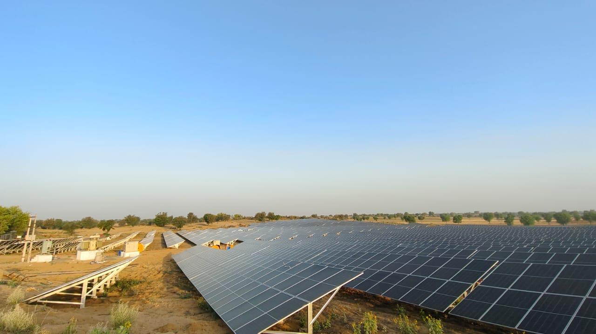
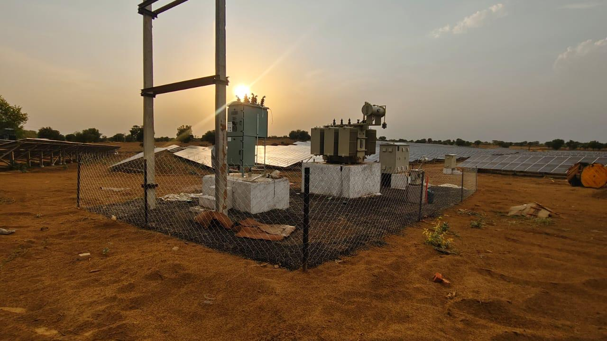
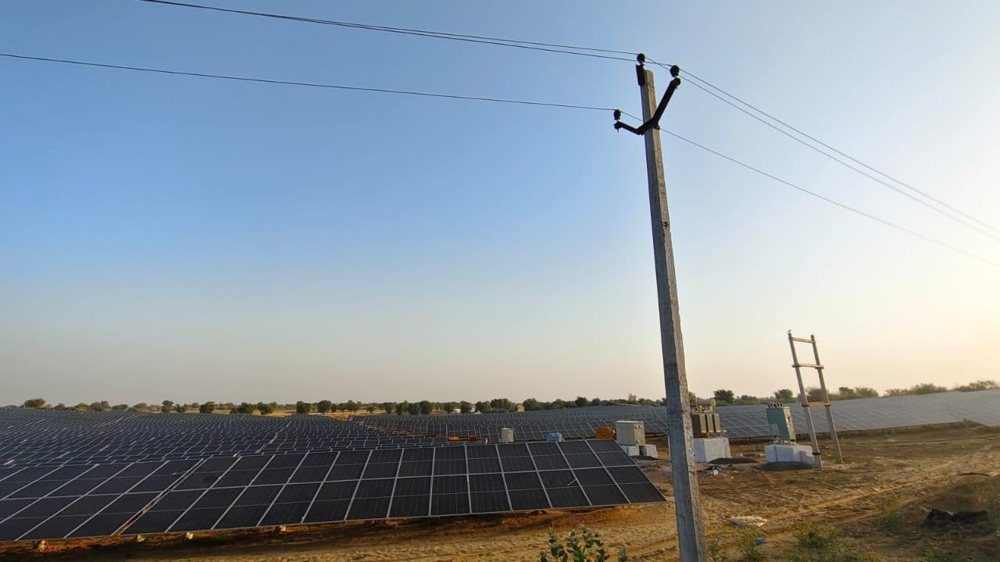

Industrial
Industrial OUR PROJECTS
Solar Projects & Project Applications
Explore industrial, ground-mounted, residential and agricultural solar applications. Verified project details can be added as the project portfolio is finalized.

CONCEPT RAYS ENERGY • FUTURE ENERGYSolar EPCProject-focused solutions
RajasthanJaipur-based business
Clean EnergyFuture-focused approach
ConsultationDiscuss your requirement

Solar Solution
Concept Rays Energy
Concept Rays Energy
PROJECT PORTFOLIO
Solar Projects Across Different Applications
Explore a portfolio-style presentation of solar applications. Replace illustrative entries with verified Concept Rays Energy project data before launch.
Industrial rooftop solar
Ground-mounted solar
Residential rooftop solar
Agricultural solar applications
Project-specific case studies
PROJECT CATEGORIES
Explore Projects by Solar Application.
Use the filters to browse the project categories represented on the website.
Industrial
Ground Mounted Residential
Residential Agriculture
Agriculture Industrial
Industrial Ground Mounted
Ground Mounted CASE STUDIES
What a Detailed Project Case Study Can Show
Verified project data can turn a visual portfolio into a useful project reference.
Location
Where the project was implemented.
System Type
Residential, industrial, ground-mounted or agricultural.
Energy Context
The project’s energy requirement and objective.
Solution
How the solar solution was planned.
Execution
Key implementation stages.
Project Outcome
Verified project-level outcomes and metrics.
MultipleSolar applications
IndustrialRooftop projects
ResidentialRooftop applications
AgricultureSolar applications
Have a Solar Project in Mind?
Talk to Concept Rays Energy about a solution designed around your property and project requirements.